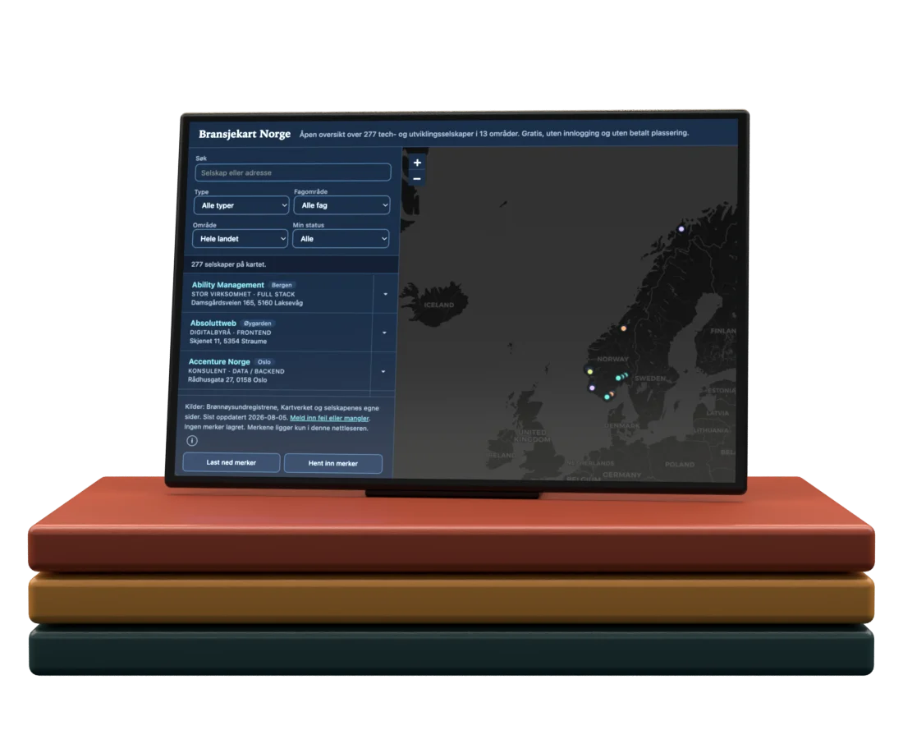
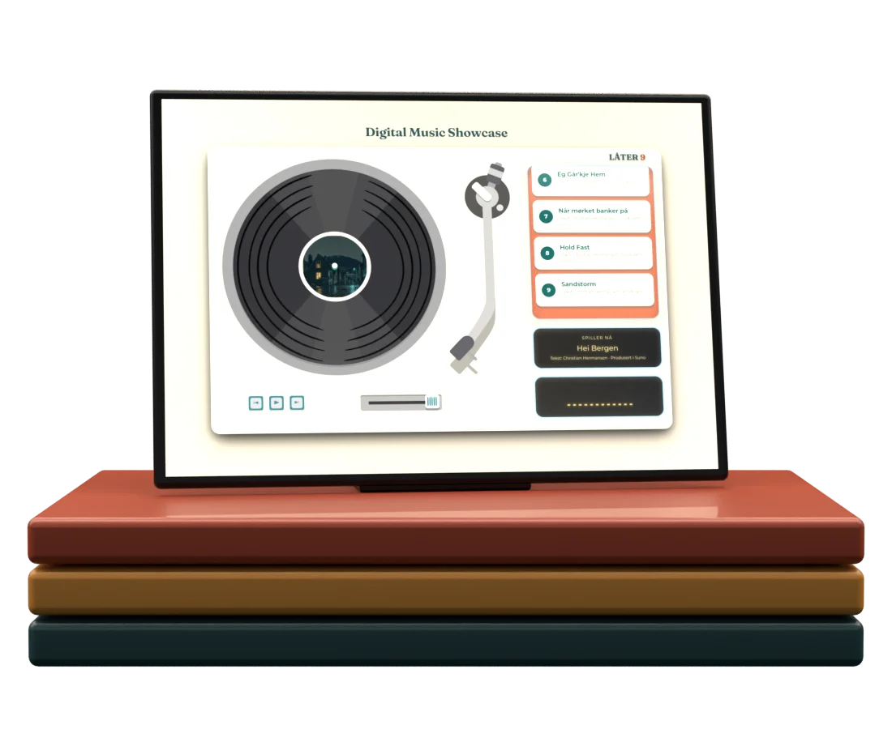

Nettsider
Tegnet for deg, og laget for telefon først. Du redigerer innholdet selv.
- Design som ikke er en mal
- Innhold du redigerer selv
- Opplæring når du tar over
Jeg er Christian Hermansen, og jeg holder til i Bergen. Det jeg bygger, skal du kunne drive selv når jeg er ferdig.

Tegnet for deg, og laget for telefon først. Du redigerer innholdet selv.
For iPhone, eller rett i nettleseren. Én ting som løser ett problem godt.
Små verktøy som tar jobben ingen har tid til.
Du ruller, og siden svarer. Historien din fortelles i den rekkefølgen du vil ha den.
Driver du noe som gjør det bedre for andre, kan du søke om hjelp uten regning. Ett prosjekt om gangen. Det er måten jeg gir tilbake på.

Musikkfestivalen i Fana fikk nettside og app, bygget på det samme innholdet. Festivalen redigerer alt selv.
Åpne fanatastisk.no
Et system for festivaldrift. Artister, program, frivillige og budsjett på ett sted, i stedet for i fem regneark.
Åpne zempel.no
Et åpent kart over tech-selskaper i Norge. Det begynte med et regneark på 36 linjer.
Åpne bransjekartet
En platespiller bygget som nettside. Tonearmen følger låten, og spilleren bytter form etter skjermen du holder.
Sett på en plateDu forteller hva som plager deg. Jeg spør mer enn jeg selger.
Du får se tre retninger før noe bygges, og velger selv.
Du følger med underveis og ser det vokse fram.
Du får opplæring og nøklene. Etterpå driver du det selv.
Send en e-post. Jeg svarer selv.
epost@christianhermansen.no